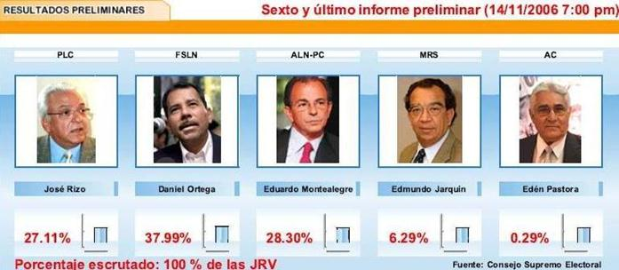

Contexto Histórico
16 años de neoliberalismo
Durante los 16 años de gobiernos neoliberales el pueblo de Nicaragua no sólo perdió gran parte de las conquistas económicas sociales logradas con el triunfo de la Revolución Popular Sandinista en Julio de 1979, sino que también perdió las conquistas económicas y sociales heredadas de la Revolución Liberal de 1893:
- Privatización del sector transporte y desaparición del ferrocarril, así como la privatización de las telecomunicaciones, energía, educación, salud y el servicio del seguro social, con resultados desastrosos, sobre todo en energía, donde no hubo inversión, lo que llevó a una crisis energética (convertir monopolios públicos nacionales en monopolios privados en beneficio de empresas extranjeras buscando niveles de retorno de “mercados emergentes”). - Privatización del comercio exterior, la banca y las empresas del Estado unido a la desaparición de la Reforma Agraria lo que aumentó la pobreza de la gran mayoría de la población.
- Políticas dirigidas a destruir la producción agropecuaria dejándolo sin financiamiento ni programas estructurales que promoverán su desarrollo y llamando al abandono del campo y al fortalecimiento del comercio para la importación de alimentos.
- La apertura acelerada de mercados produjo un retroceso en el desarrollo industrial y agropecuario del país, generando una alta concentración de la riqueza en los grupos oligarcas.
- Emigración de trabajadores nicaragüenses hacia Costa Rica y Estados Unidos por la falta de generación de empleos.
- Producto del dominio del capital internacional se favoreció la desregulación del sector laboral y el debilitamiento de los reglamentos de las Zonas Francas.
- El salario mínimo llegó a cubrir únicamente el 50% de la canasta básica.
- El consumismo llevó a realizar grandes importaciones con bajos niveles de exportaciones, lo que condujo a un déficit considerable en la cuenta corriente de la balanza de pagos (2006: US$716.9 millones).
- La cooperación externa y las remesas cubrieron la brecha en cuenta corriente. - Quiebras bancarias fraudulentas, lo que condujo a un alto endeudamiento interno y operaciones ilícitas masivas como los CENIS y las subastas que costaron al país más de US$ 600 millones.
- Sistema tributario basado en impuestos indirectos con efectos regresivos sobre las grandes mayorías. - Políticas económicas proteccionistas para favorecer a los grupos oligárquicos financieros, incluyendo el no pago de impuestos por los bancos por varios años.
- La micro, pequeña y mediana empresa sin acceso a crédito bancario, sobre todo después de la quiebra y abolición del Banco Nacional de Desarrollo por la corrupción de créditos relacionados de la Junta Directiva.
- Desnacionalización de la banca nacional por venta a transnacionales.
- El resultado global de los 16 años de gobiernos neoliberales es el empobrecimiento del país, colocándolo como el segundo país más pobre de América Latina y el Caribe, solo Haití tiene mayor nivel de pobreza.
Dos indicadores ilustran el estancamiento y deterioro en las condiciones de vida de los pobres en los 16 años de gobiernos neoliberales :
• En el año 1979 al triunfo de la Revolución Popular Sandinista el analfabetismo era del 54%. Como resultado de la campaña nacional de alfabetización de la década de los años 80 el porcentaje de analfabetismo disminuyó al 13%. Al recibir el Gobierno de Reconciliación y Unidad Nacional en el año 2006 el analfabetismo era superior al 30%, reflejando el desinterés de los gobiernos neoliberales en brindar la educación necesaria a la población.
• La desnutrición crónica en niños menores de 5 años, reflejaba una intensidad del 24.9%.
Elecciones del año 2006
Durante 2005 y el primer semestre de 2006 la política nicaragüense dio muestras de mutación desde un sistema bipartidista que enfrentaba, desde 1990, a sandinistas y antisandinistas a otro donde se sumaban dos formaciones relevantes más, producto ambas de escisiones internas de cada uno de los bloques enfrentados . Las dos nuevas expresiones suponían una reacción a la política caudillista, pactista y verticalista imperante en las formaciones tradicionales personalizadas en Ortega y Alemán. Así, en el espectro de la izquierda aparecía el FSLN con su candidato, Daniel Ortega, mientras Herty Lewites (hasta su muerte el 2 de julio de 2006) y posteriormente Edmundo Jarquín lideraron el Movimiento Renovador Sandinista (autodesignado como la fracción renovadora del sandinismo). Por otro lado, la expresión ortodoxa del liberalismo, el PLC, presentó como candidato a José Rizo (quien había sido el vicepresidente de la administración Bolaños), ya que su líder, Arnoldo Alemán, estaba arrestado e imposibilitado de concurrir a la contienda debido a múltiples procesos judiciales en curso. La formación liberal disidente fue encabezada por Eduardo Montealegre. El escenario descrito (con una dinámica polarizada y a cuatro bandas) no tenía precedente en la historia reciente del país y, por lo tanto, desde el inicio de 2006 se observó la posibilidad de un cambio en la lógica política que había imperado desde la revolución.